01 · ponto de partida
Três palavras que não coincidem
Moderno pode nomear o presente, mas também uma relação histórica de oposição ao antigo.
Modernidade reúne transformações de longa duração: expansão comercial, industrialização, urbanização, guerras e novas formas de circulação.
Modernismo designa respostas artísticas e intelectuais a essas transformações. Ele não possui uma única origem, forma ou geografia.
Uma ruptura pode apresentar-se como novo começo e, pouco depois, converter-se em tradição. O modernismo também deve ser lido por suas contradições.
Leitura de apoio: Antoine Compagnon, Os cinco paradoxos da modernidade.02 · seleção de obras
Modernismos no plural
As obras abaixo foram selecionadas do material de apoio para deslocar a ideia de uma história exclusivamente europeia.
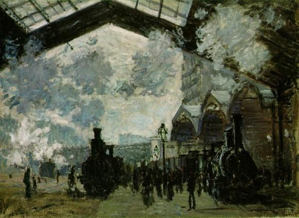
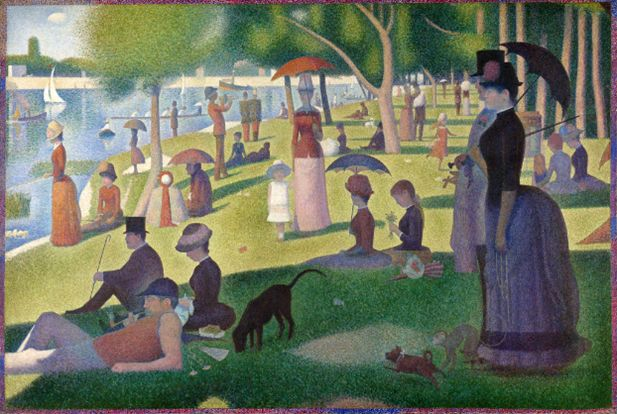
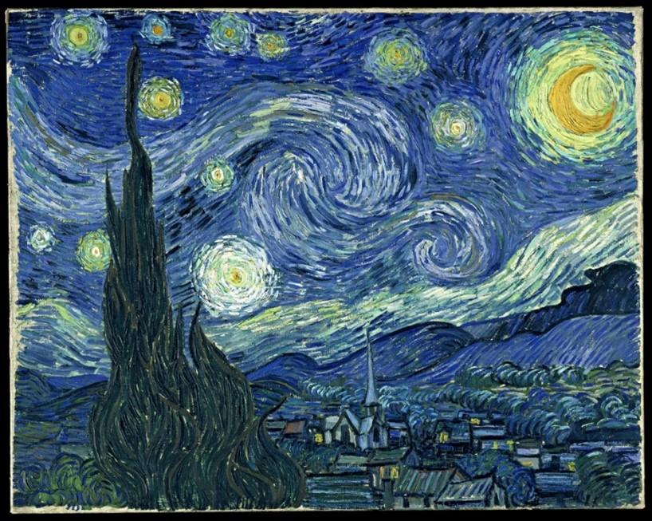
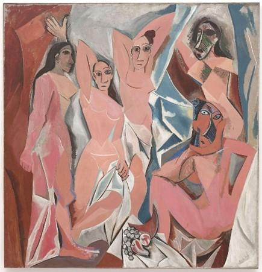
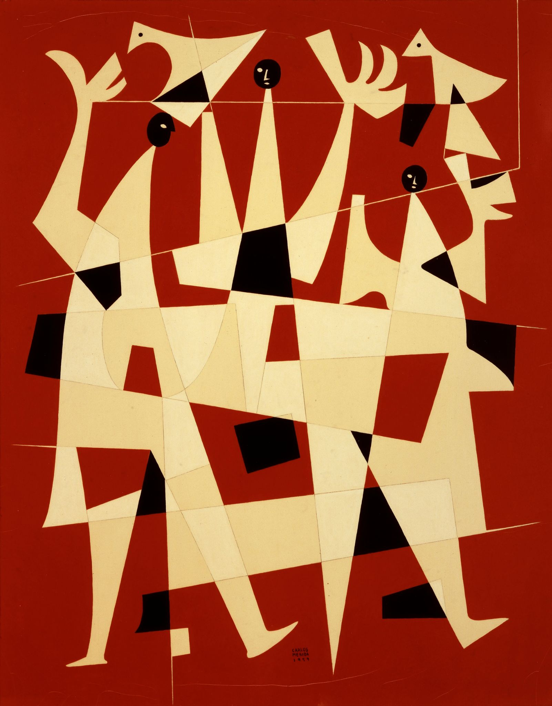
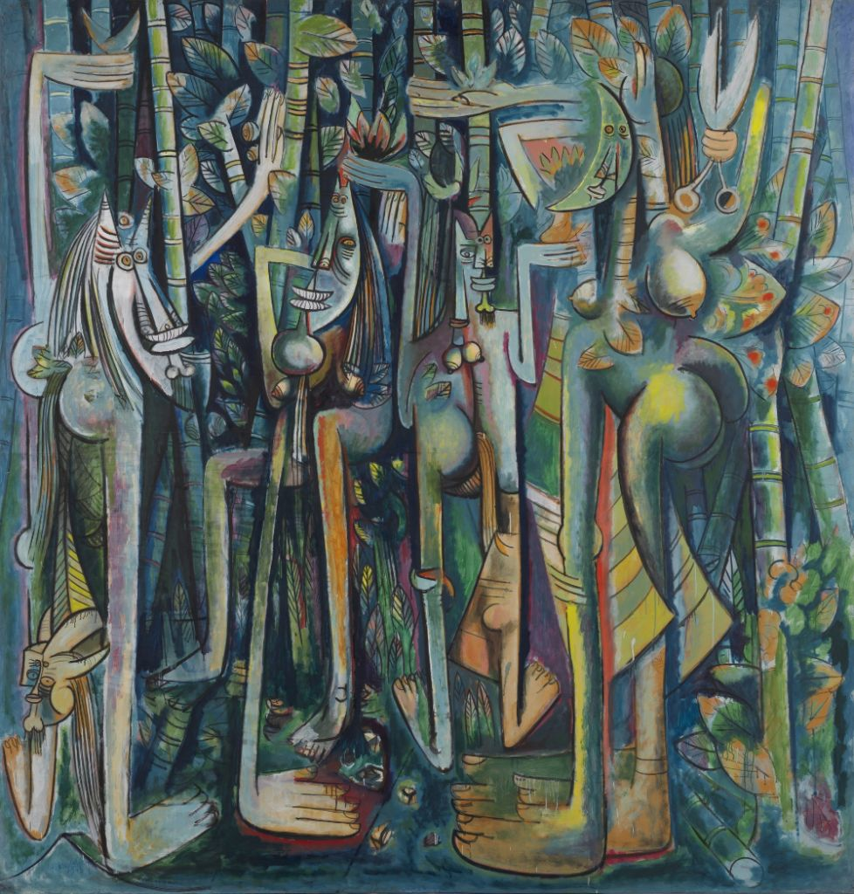
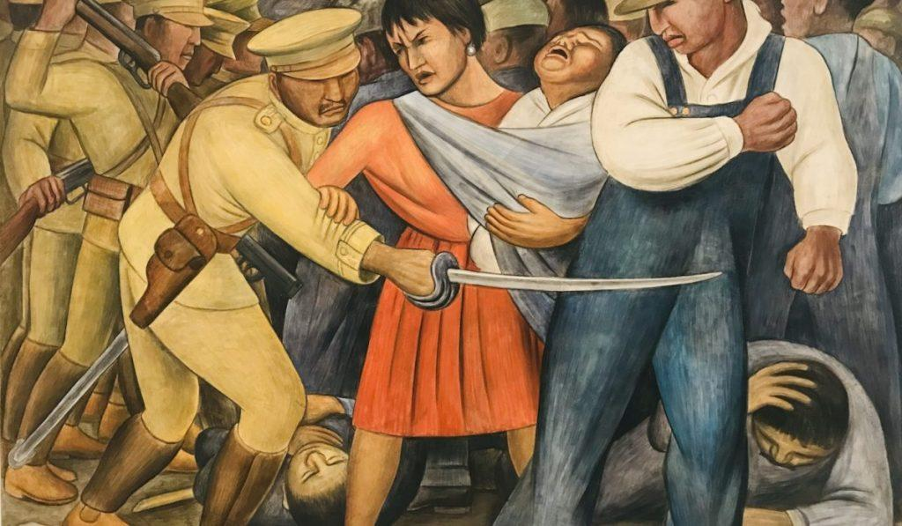
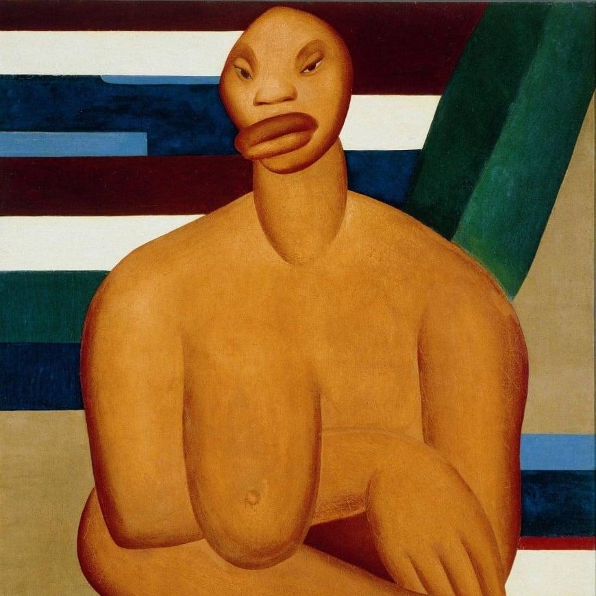
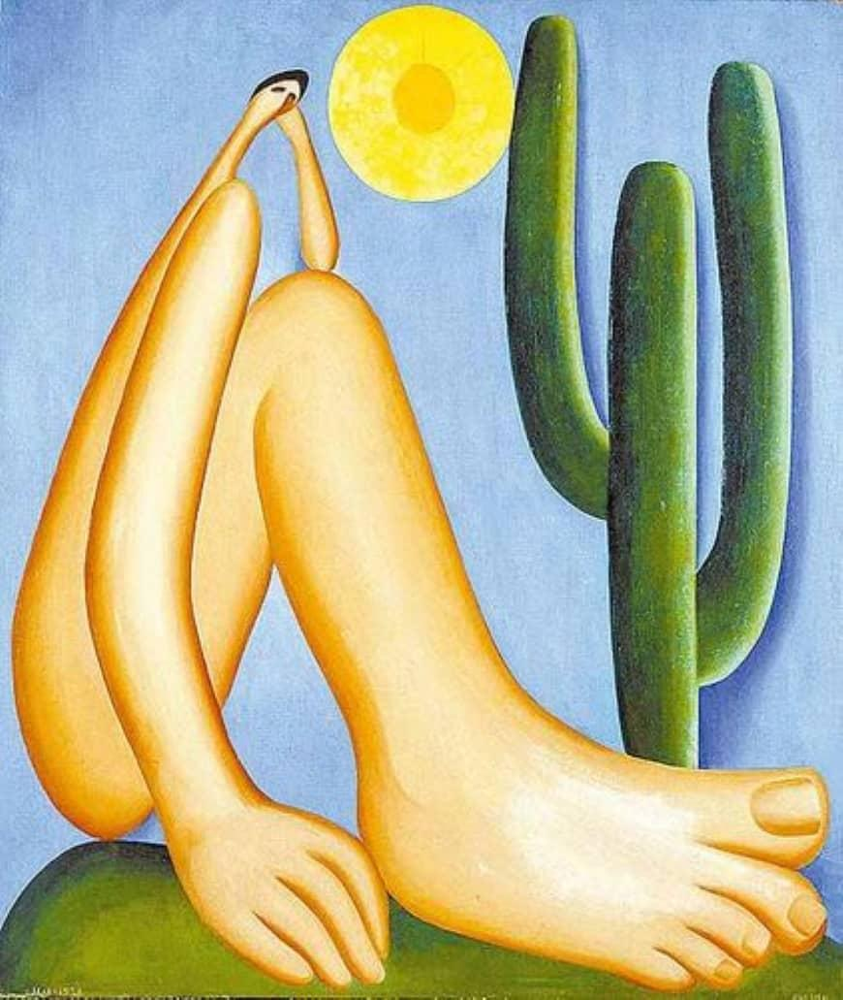
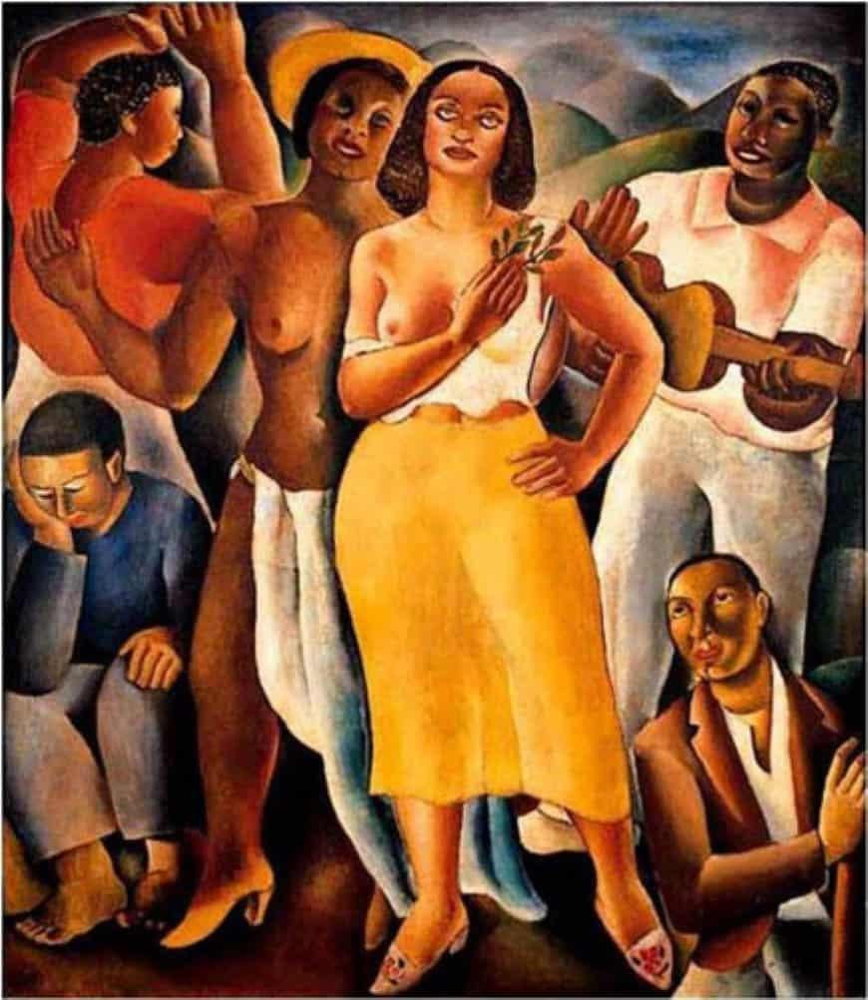
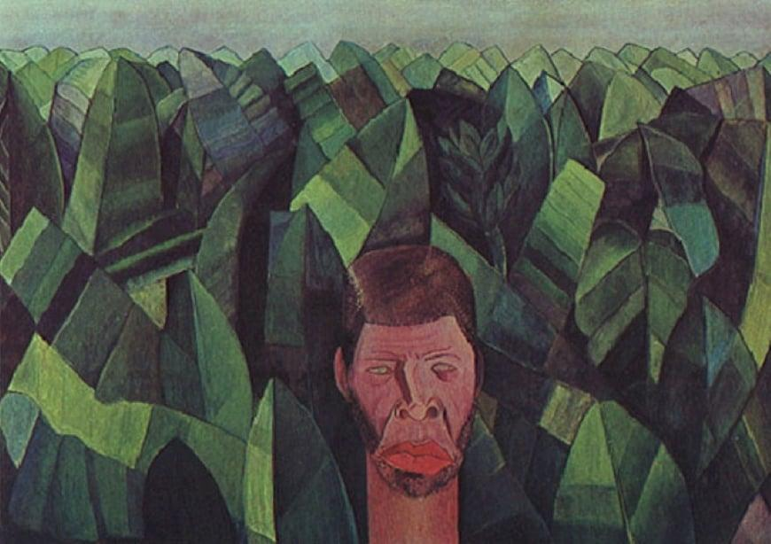
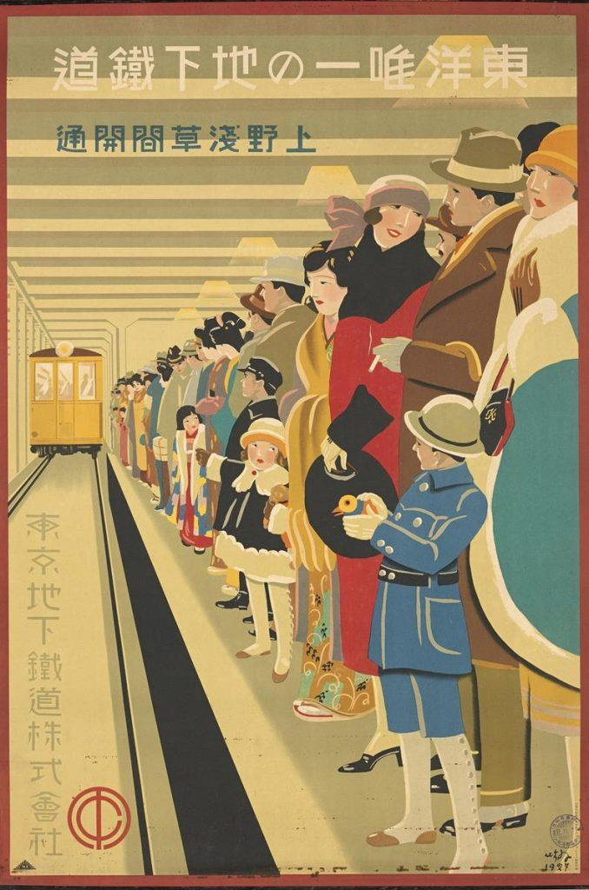
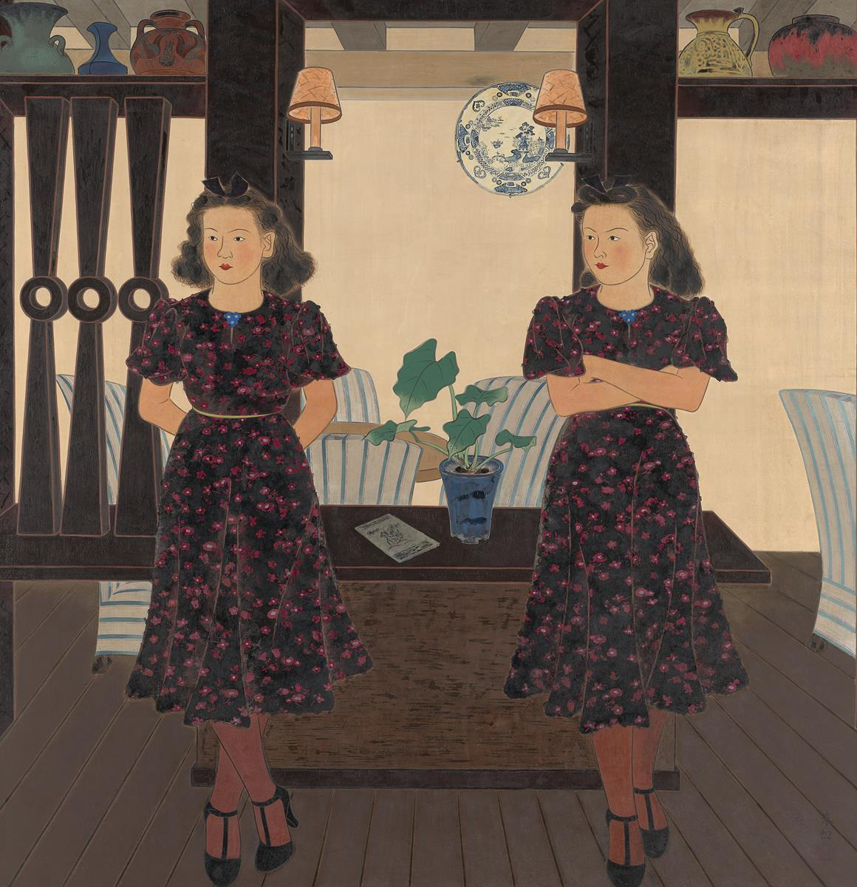
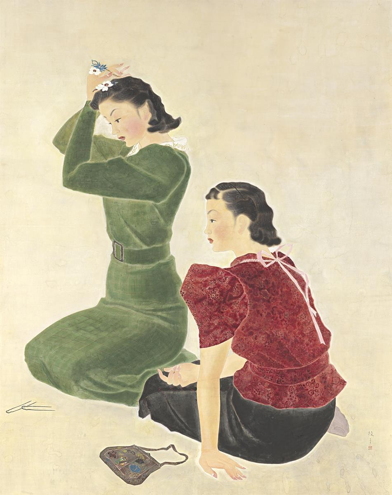
03 · pistas de leitura
Ler o modernismo por seus conflitos
- Ruptura e tradição. Antoine Compagnon permite tratar o novo como uma relação contraditória com o passado.
- Cidade, guerra e comércio. Marshall Berman, Carl E. Schorske, Eric Hobsbawm e Olivier Compagnon situam modernidade, urbanização e crise.
- Vanguardas em circulação. Jorge Schwartz e Vicente Huidobro ajudam a deslocar o recorte europeu como centro exclusivo das vanguardas.
- Imagem, fotografia e verdade. Charlotte Cotton, Joan Fontcuberta e os debates sobre fotografia recolocam a relação entre representação, técnica e veracidade.
04 · perguntas para continuar
Algumas perguntas, nenhuma resposta definitiva
Que modernidade cada obra pressupõe ou contesta?
Quais instituições e circuitos tornam uma obra reconhecível como moderna?
O que muda quando deslocamos o percurso entre Europa, Américas e Ásia?
Como fotografia, cinema, design e artes gráficas alteram a história da arte moderna?